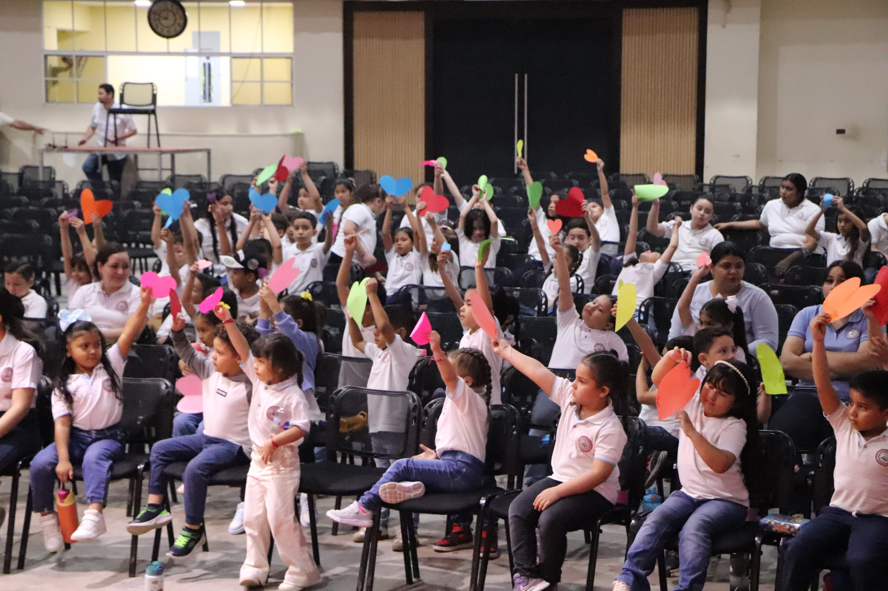

Nuestro Enfoque
Somos una institución educativa cristiana que proporciona a sus estudiantes formación académica de calidad, para su inclusión a la educación superior y/o campo laboral; haciendo uso de tecnología, proyectos de autodesarrollo que promueven la salud social, mental y espiritual, con una sólida formación de valores basados en la infalible palabra de Dios.
Plan de Estudios
En Kinder potenciamos las habilidades fundamentales a través de asignaturas clave enriquecidas con principios bíblicos:
- Área Básica: Lenguaje, Matemática, Ciencia y Tecnología, Estudios Sociales.
- Formación Espiritual: Educación en Valores Christianos y Capilla.
- Especialidades: Idioma Inglés e Informática Educativa.
Metodología e Innovación
Implementamos metodologías activas donde el estudiante es el protagonista de su propio aprendizaje:
- Uso constructivo de herramientas tecnológicas y entornos virtuales.
- Proyectos de autodesarrollo orientados a la salud mental y emocional.
- Resolución de problemas cotidianos aplicando el razonamiento lógico.
Perfil del Estudiante
Al finalizar el cuarto grado, buscamos que nuestros alumnos destaquen por:
- Su sólida base en valores éticos y morales basados en la palabra de Dios.
- Habilidades sólidas de pensamiento crítico, liderazgo y trabajo en equipo.
- Autonomía en sus hábitos de estudio y un alto sentido de responsabilidad social.